The primary jumps two steps lighter
color/primary/default maps to 600 in Light and 400 in Dark. Blue resolves to #006DCE → #6AAEFF. Dark hover uses 300 and active uses 200, becoming progressively paler.
What Attio’s light and dark interfaces reveal about color, density, elevation and dropdowns, and how to apply those lessons to Spartant.
Live interface evidence Verified Figma mappings Proposal, not migrationSpartant’s pale dark-mode primary is a verified semantic mapping choice. Start by correcting solid-fill state mappings, then tighten neutral surfaces and menu anatomy. Much of the required density system already exists.
color/primary/default maps to 600 in Light and 400 in Dark. Blue resolves to #006DCE → #6AAEFF. Dark hover uses 300 and active uses 200, becoming progressively paler.
The same chart fill sampled approximately #276CF1 in both themes. Blue selection marks also retain their visual weight. Appearance’s cyan, orange, purple, and green swatches change, so this is not evidence that every accent is invariant.
The inspected Dropdown Menu has 24 px shell padding, 12 px gap, and preset 160/200 px heights. Attio’s view menu is a compact list with about 4 px outer padding and 32 px rows.
Recommended direction: stable, saturated emphasis fills; theme-specific text colors; quieter surface steps; compact desktop controls; menus composed from reusable items. Keep secondary actions neutral and retain separate control-color roles.
| Surface | Themes / interactions | Finding |
|---|---|---|
| Home | Light + Dark | Neutral navigation, subtle current-page fill, compact search and utility buttons; disabled composer action is pale, so it is not a reliable primary-color sample. |
| Appearance settings | Light + Dark; theme changed and restored | Theme and accent are separate choices. Blue remains stable in sampled images; other offered swatches vary. |
| Notifications settings | Light + Dark; controls observed without changing preferences | Tiny saturated switches and checkboxes sit within quiet bordered groups. Color is reserved for selected controls. |
| Profile settings | Light; opened Start week on select; Down, Escape | Trigger-width listbox, inset selected row, blue check. Escape preserved Monday and returned focus to the combobox. |
| Workspace General | Light; read-only | Consistent form widths, section spacing and subdued controls. Destructive action is separated in a danger section. |
| Reports index + Companies by Country dashboard | Index in both modes; populated dashboard captured in both | Chart and primary action share blue; neutral card boundaries and muted grid/axis detail preserve hierarchy. |
| Companies table | Light + Dark; View settings opened in both | Dense toolbar, thin row/column rules, subtle enrichment tint. Colored links use a different visual treatment from filled actions. |
| View settings / Add attribute | Dark nested panel; searched “country”; Escape | In-place searchable panel with Back, scrollable options, a fixed creation footer, and a result containing the parent/child path. No attribute was added. |
| Company record detail | Dark | Multi-column overlay, neutral tabs, low-contrast card shells, tinted category badges with brighter text. |
| Tasks | Light | Compact filter chips and utility controls. Empty-state primary repeats the toolbar action. |
Method: native Dia UI, screenshots, accessibility tree, and read-only Figma inspection on 1 October 2026. No Attio stylesheet or internal token source was extracted. Screenshot pixels were converted from the embedded display profile to sRGB. Hex samples are approximate rendered colors; size estimates assume the apparent 2× capture scale and are not computed CSS measurements. Pointer halos in captures are capture-environment artifacts, not product effects. Motion durations, browser collision handling, and full accessibility conformance were not measured.
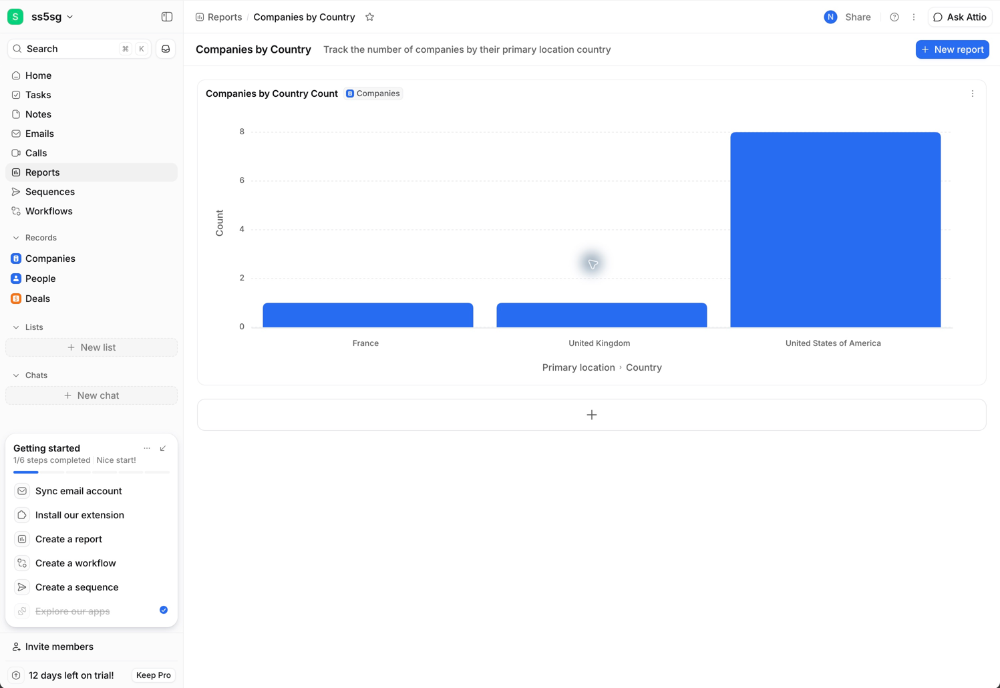
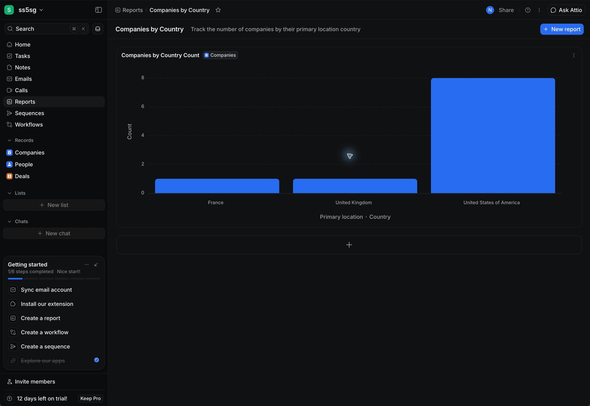
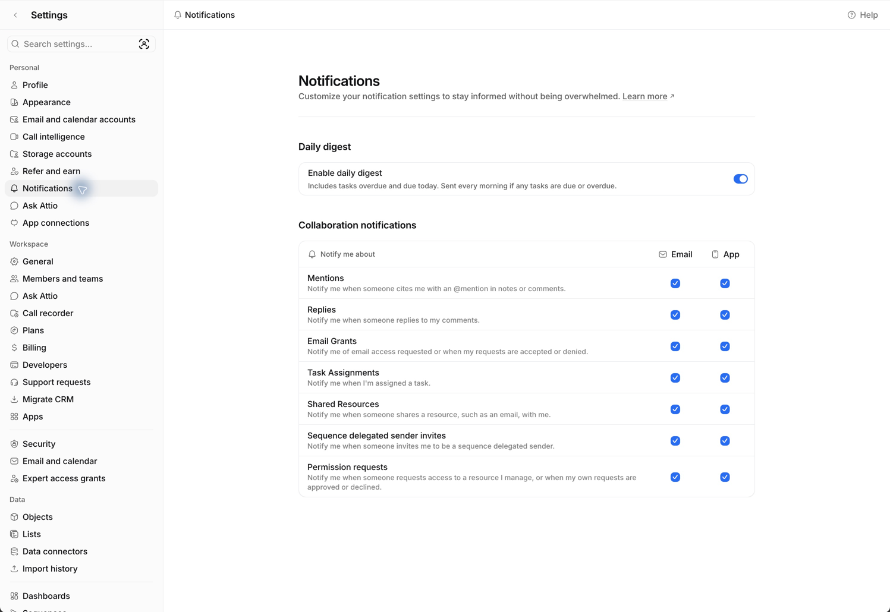
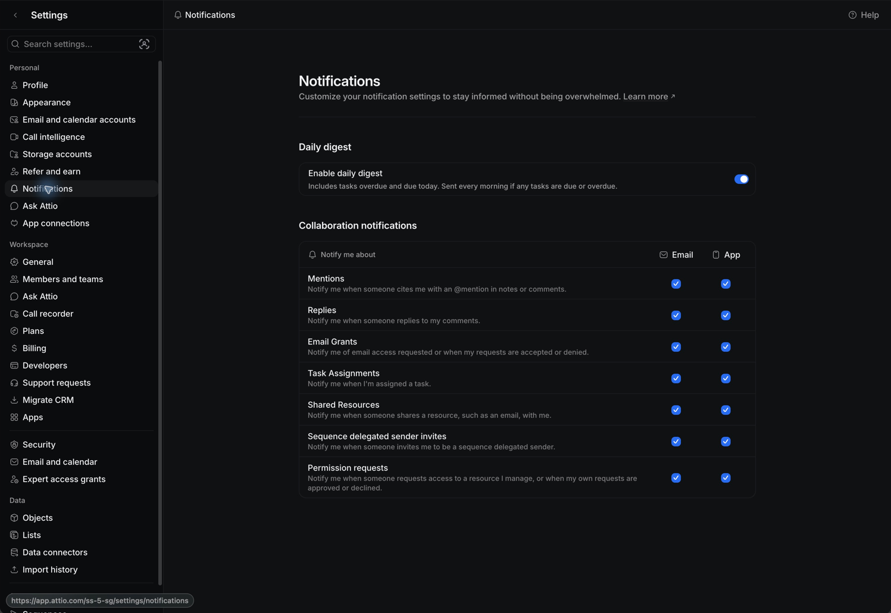
Attio’s main dark canvas is close to black, with a darker sidebar and a slightly lighter menu. Large surfaces stay restrained. Borders describe structure without making every region look like a raised card.
#FFFFFF#FBFBFB#EEEFF1#0B0C0E#101113#17181A#212224#1B1C20Approximate sRGB screenshot samples from Appearance, Notifications, and View settings. These are descriptive role labels assigned for this report, not Attio token names. Subtle dividers are not a recommended replacement for essential control boundaries.
| Role | Light | Dark | Implication |
|---|---|---|---|
| surface/default | #FFFFFF | #1E2227 | Dark starts substantially lighter than Attio’s canvas. |
| surface/elevated | #FFFFFF | #353B43 | The lifted panel is a large, cooler gray step. It can compete with the content. |
| surface/muted | #F8F8F9 | #1E2227 | Dark muted and default currently collapse to the same value. |
| surface/subtle | #F8F8F9 | #111417 | Subtle is darker than default in Dark. Clarify whether it means inset or merely low emphasis. |
| border/subtle | #EDEEF0 | #1E2227 | On the default dark surface it is invisible. This may be fine for decorative separators, but not an essential boundary. |
| border/default | #DFE1E5 | #353B43 | Same value as elevated surface in Dark; assess it in context, not as an isolated swatch. |
Trial neutral/950 #111417 for the main dark surface and neutral/900 #1E2227 for overlays. Keep Light secondary default white and hover Gray 50. Introduce a distinct shell/inset role only if the existing surface roles cannot express its purpose. Audit consumers before repointing shared variables.
Only after that comparison, consider reducing the cool tint and adding a small number of intermediate dark grays. Do not rebuild the entire ramp to imitate a screenshot. Test at least the table, dashboard and settings composition before approving any palette change.
Spartant already separates primary default, text and surface roles. Preserve that useful architecture. The problem is how solid emphasis and its states resolve in Dark, not the existence of theme-aware values.
Quiet surfaces support the action.
Fill #006DCE / label #FFFFFFQuiet surfaces support the action.
Proposed fill #006DCE / label #FFFFFFSpecimens are proposed Spartant behavior, not reproductions of Attio. Hover and press the primary button. Current-mode preview changes the dark fill/foreground aliases only; its surrounding surface remains the pilot surface to isolate the comparison.
| Use | Current Blue mapping | Proposal |
|---|---|---|
| Solid primary fill | Light 600; Dark 400 | Pilot 600 (#006DCE) in both standard themes. Retain saturated 700 hover and 800 pressed. |
| Text on primary | Light white; Dark near-black | Pair solid primary fill with white in both standard themes. Change the fill and foreground together. |
| Primary text / links | Light 700; Dark 300 | Keep independent theme-aware foreground roles. A link may need a brighter shade in Dark. Do not force the button fill onto small text. |
| Primary soft surface | Light 100; Dark 950 | Keep theme-aware tint/background values. Evaluate foreground, border and selection cue together. |
| Selection controls | Default #0485F7 both; Dark hover 400, active 300 | Keep control roles overrideable and separate from product primary. Pilot saturated 600/700 state fills instead of pale 400/300. |
| Switch thumb | Dedicated color/switch/thumb | Preserve its dedicated light thumb role; do not blindly repoint it to generic control foreground. |
| High contrast + alternate brands | Four contrast modes and Blue/Purple/Orange/Sky exist | Retain independent high-contrast decisions. Evaluate every brand’s fill/label pairing; do not assume Blue’s results transfer. |
| Pair | Contrast | Decision |
|---|---|---|
| White text on #006DCE | 5.15:1 | Suitable starting point for normal-size primary labels. |
| White text on #0485F7 | 3.68:1 | Insufficient for normal-size text at 4.5:1. Do not promote the control fill to a white-label button without adjustment. |
| #006DCE against current #1E2227 | 3.11:1 | Resting fill clears 3:1 against this dark background. |
| #006DCE against sampled #101113 | 3.67:1 | Shows why saturated blue can remain visible on a darker canvas. |
| #0485F7 check/fill against white | 3.68:1 | Potentially suitable for an essential non-text check/track distinction, subject to actual geometry and adjacent colors. |
These are WCAG relative-luminance calculations from opaque sRGB pairs, not a full component accessibility audit. Darker hover/pressed fills may lose boundary contrast against dark surfaces: keep a qualifying outline where needed, and test the complete state. Equal RGB values across themes do not produce equal contrast against their surroundings.
Criteria: W3C text contrast and non-text contrast.
GitHub Primer separates base, functional, and component/pattern tokens. Components use meaningful roles; raw colors remain behind those roles. Its semantic system distinguishes foreground, muted backgrounds, and emphasis backgrounds with a paired on-emphasis foreground.
color/primary/600Raw palette value; brand axiscolor/primary/defaultPurpose and light/dark pairingbutton/primary/backgroundOnly if a distinct contract needs itThe third name is illustrative, not an instruction to add a duplicate token. Keep existing Spartant names and IDs wherever their meaning is correct. Add a token only when a consumer audit identifies a real missing role.
| Keep or clarify | Purpose | Migration rule |
|---|---|---|
| primary/default + hover + active + foreground | Solid emphasis contract | Audit Button, Icon Button and all other consumers before repointing. Update fill and label pair atomically. |
| primary/text + primary/surface | Readable colored text and soft backgrounds | Do not merge with the solid action contract. |
| control/* + switch/thumb | Selection controls, independent customization | Preserve override separation and dedicated thumb color. |
| surface/default, subtle, muted, elevated | Canvas, inset/support, container, overlay roles | Write placement rules first. Add shell/inset/overlay only if existing roles cannot be made unambiguous without breaking consumers. |
| border/subtle, default, strong, overlay | Decorative structure versus essential control boundaries | Document allowed background pairings and minimum-contrast cases. |
| shadow/control/* and future overlay shadow roles | Theme-aware elevation | Every effect layer remains bound to semantic color and opacity variables. |
Use Overview, Anatomy, Variants and sizes, States, Keyboard behavior, Accessibility, Token mappings, and Migration notes. Link Figma evidence to implementation status. An approved Figma state is not evidence of implemented browser behavior.
References: Primer token naming, Button documentation, ActionMenu composition. Borrow the organization while retaining Spartant’s public API and visual identity.
| Element | Attio estimate from 2× captures | Spartant verified / proposed |
|---|---|---|
| Toolbar buttons | About 28 px high; approximately 8 px corners | Existing Compact Small is 28 px; use it for dense toolbars. Compact Base is 32 px. |
| Settings inputs / select trigger | About 32 px high; two-column form fields | Existing Compact Base is 32 px. Keep Relaxed 40 px for less dense forms. |
| Menu item | About 32 px high; 4 px shell inset; roughly 8 px row corners | Propose 32 px normal rows, 28 px condensed rows, 4 px panel padding, 8 px item padding. |
| View settings panel | About 270 px wide; about 12 px outer radius | Propose 240/280/320 px presets; 280 px default, viewport-clamped. Field selects can match trigger width. |
| Notification switch | Visible track about 24 × 16 px; thumb about 12 px | Current Small 32×16, Base 40×20, Large 48×24. Keep those; use Small in compact rows before adding a narrower option. |
| Checkbox | Visible mark about 16 × 16 px | Pilot a 16 px visual with a larger accessible hit region. |
| Table rows / sidebar rows | About 36 px / 28 px | Propose 36 px compact data rows, 44 px relaxed; retain a predictable text baseline. |
| Control hit area | Not measured from DOM | Adopt at least 24×24 CSS px or compliant spacing for pointer use (W3C target-size criterion); target 44×44 for touch. Never infer hit size from visible track size. |
Local specimens only. No connection to Attio settings.
Figma already defines Relaxed 32/40/48 px and Compact 28/32/40 px heights, plus a 24 px extra-small control. Large controls already use a density-aware 12/8 px radius. Keep these decisions and document contextual use before adding a new scale.
The Switch page has modern switch/control/* roles alongside older selection/switch/* values. Audit consumers before deprecating duplicates; the older 40×24 token is not the measured Base Switch Control, which is 40×20.
Attio’s light buttons have a faint edge and short contact shadow; popovers have a broader shadow. In Dark, a slight surface lift and a thin edge do more of the separation. Large dashboard cards rely mainly on borders. The effect should communicate hierarchy rather than decorate every container.
| Layer | Current / observed | Proposed action |
|---|---|---|
| Control shadow | Spartant Primary and Secondary already share two semantic-bound shadow layers: y=1 blur=3 and y=0 blur=2 | Preserve geometry in the first token correction. Review dark edge intensity before making a separate effects change. |
| Overlay shadow | Attio visibly separates floating panels more than ordinary controls; exact CSS unknown | Pilot a dedicated overlay preset: light 0 8px 24px black/10% plus 0 2px 6px black/6%; dark 0 12px 32px black/35% plus a subtle light edge. Candidate values only. |
| Structural border | Attio’s hairline rules are quiet in both modes | Use subtle borders for organization, stronger boundaries for essential input edges. Avoid universal white outlines in Dark. |
| Typography | Attio appears around 14 px body, 12–13 px metadata, 24 px settings headings | Retain Spartant Inter styles. Pilot 14/20 body, 12/16 metadata, 16/24 section labels, 24/32 page titles. Use muted text sparingly. |
| Spacing | Dense rows inside roomy page sections | Use 4/8/12/16/24/32 px spacing roles. Reduce control interior density without compressing section hierarchy. |
Existing Figma rules still apply: outlined icons with radius 2 and stroke 1.5; connected instances; semantic variable bindings for every effect color; density tokens for generic layout; no unsolicited canvas annotations.
| Priority / proposed work item | Change and deliverable | Dependencies / acceptance |
|---|---|---|
| P0 · Preserve saturated action states | Snapshot token consumers. Add a paired light/dark review of Primary Button, Icon Button, Checkbox, Radio and Switch. Pilot stable primary 600 and saturated control states. | Use current file IDs and aliases. Validate fill/label pairs, essential boundaries, all interaction states, four contrast modes and four brand modes. No global replacement of blue/purple. |
| P1 · Rebalance dark surfaces | Trial default 950 and elevated 900 in isolated table/dashboard/settings compositions; document surface placement and border pairings. | After P0 comparison. Review current versus candidate at identical density. Check selected, disabled and read-only surfaces remain distinguishable. Decide whether any new gray is actually needed. |
| P1 · Rebuild dropdown anatomy | Replace row-count variants with a reusable shell and Menu Item composition. Define action-menu, selection and configuration-popover contracts. | Audit Select, Listbox and Dropdown pages first. Native Figma slots, connected instances, search/empty/scrolling/long-label examples. Implement keyboard and collision behavior in code separately. |
| P2 · Consolidate density and elevation | Use existing Compact controls in dense desktop contexts. Document Small/Base/Large Switch sizes, touch hit areas and control/overlay effect presets. | Do not shrink all controls globally. Verify 200% zoom, coarse pointer, reduced motion and high contrast. Audit old selection/switch roles before deprecating. |
| P2 · Publish documentation and migration | Foundation guidelines plus per-component Overview, Anatomy, States, Keyboard, Tokens, Examples and Migration. Record aliases changed and affected consumers. | Figma evidence and code evidence remain separate. Snapshot comparisons and release notes before publishing changed shared variables. |
Approve one narrow experiment: stable solid primary fills, current versus candidate dark surfaces, and a compact dropdown shell on three small comparison compositions. Review those together before changing shared library variables. The proposal does not authorize or perform a production migration.
Live Figma: Color, Button, Switch Control, Select, Dropdown Menu.
Machine-readable audit: theme mappings, Switch anatomy, Select anatomy, Dropdown anatomy.
Attio routes: Home, Appearance, Notifications, Profile, Workspace, Reports, Dashboard, Companies, Tasks. These require your account access.
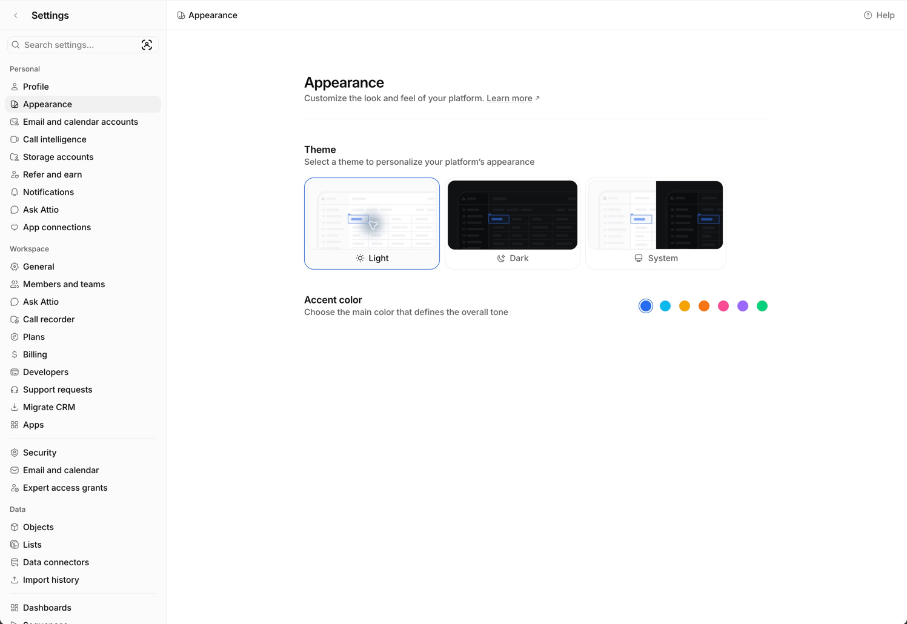
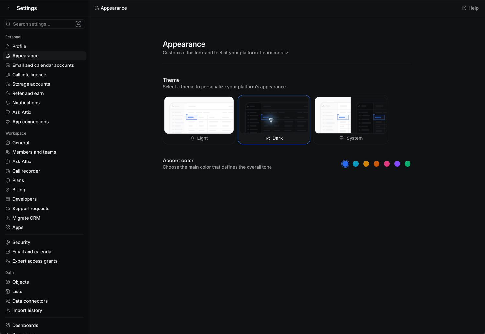
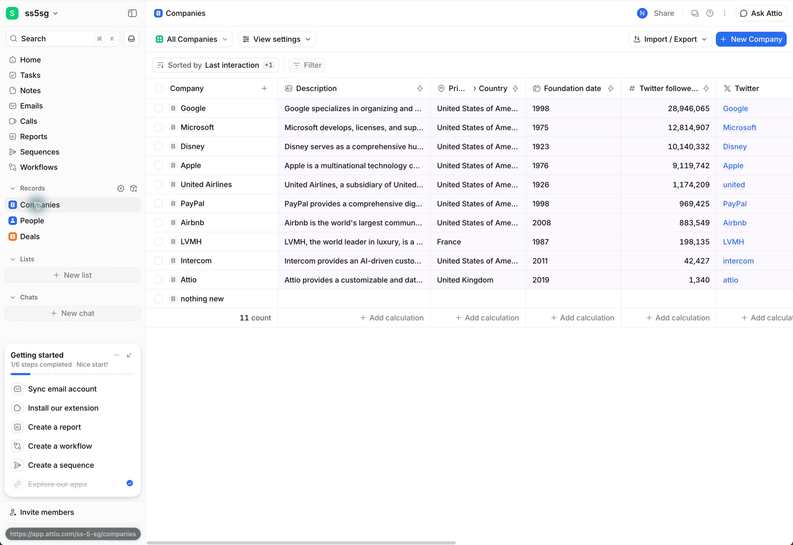
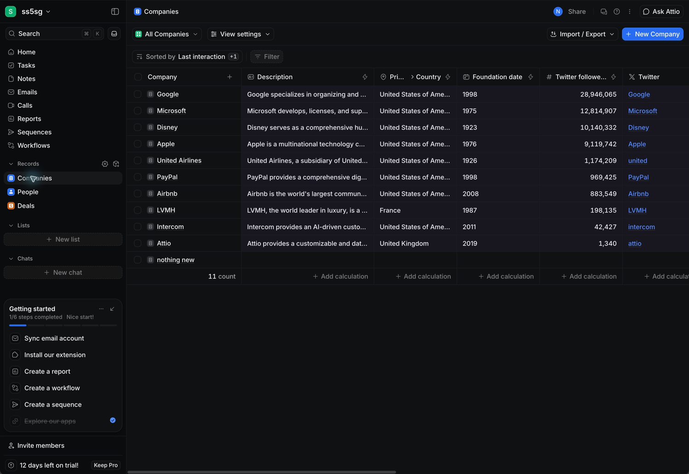
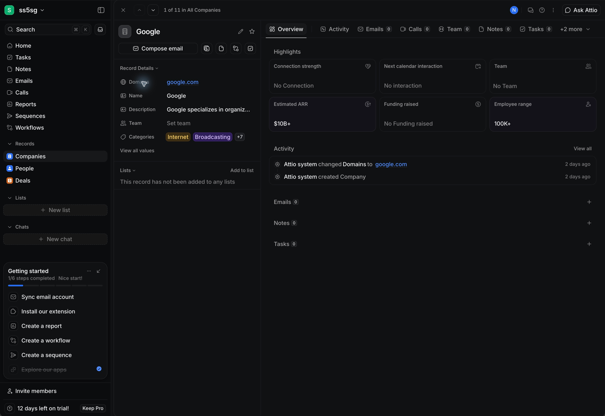
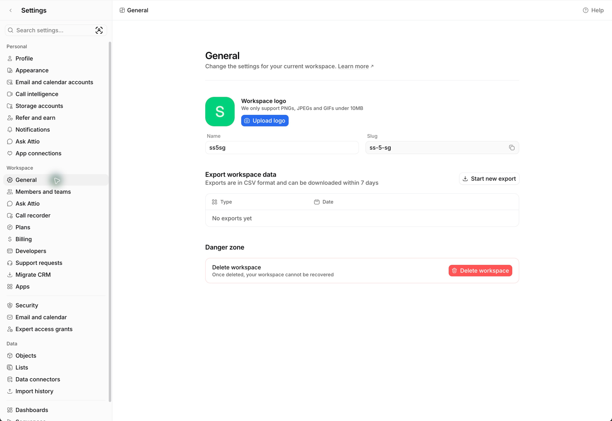
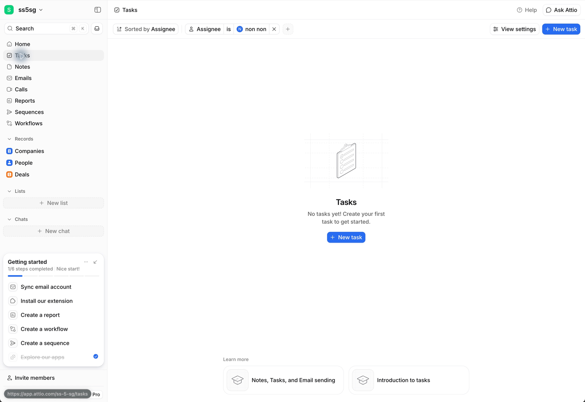
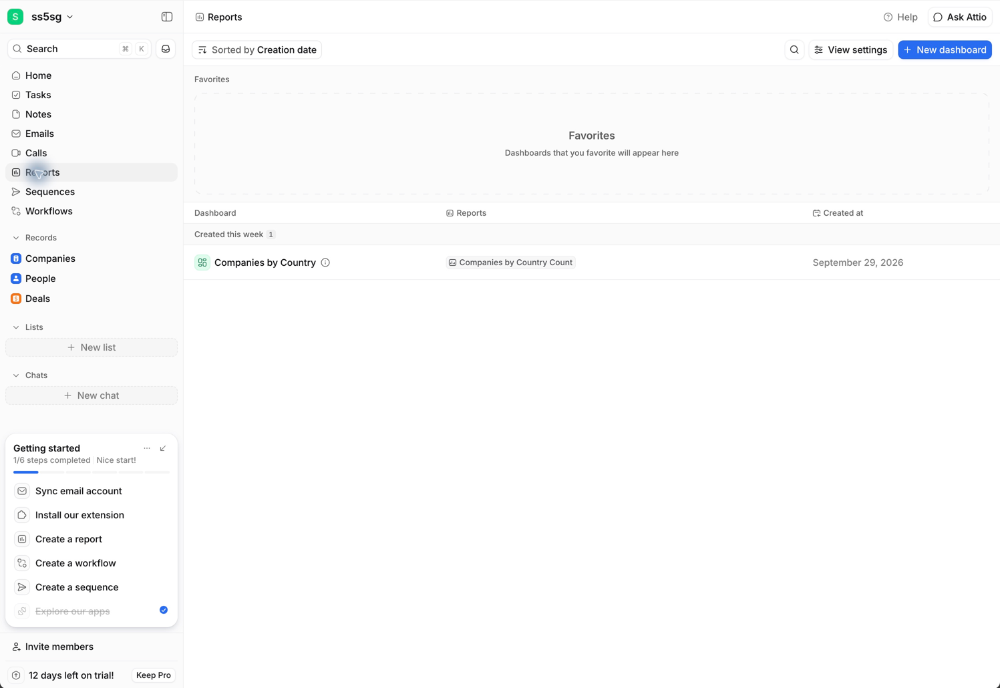
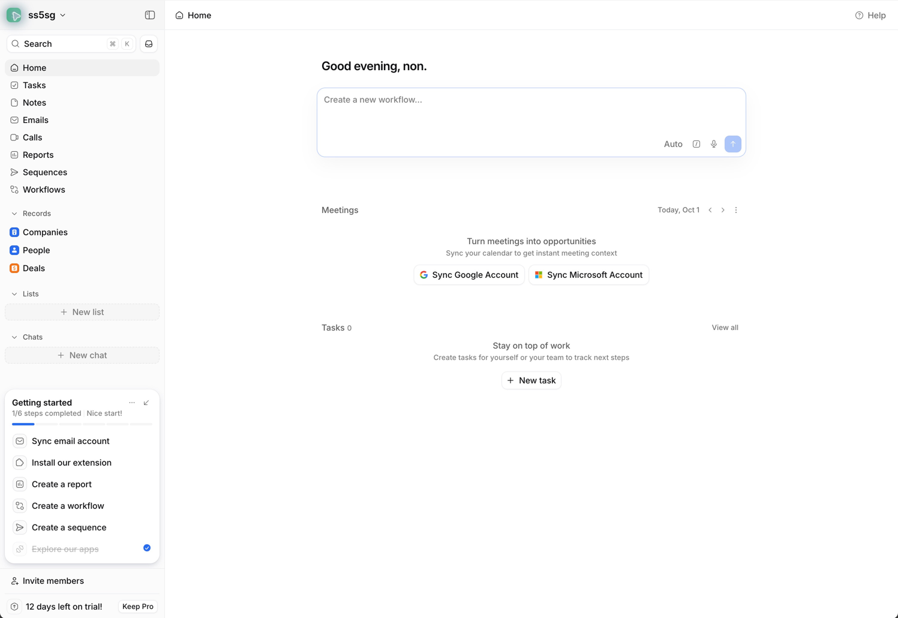
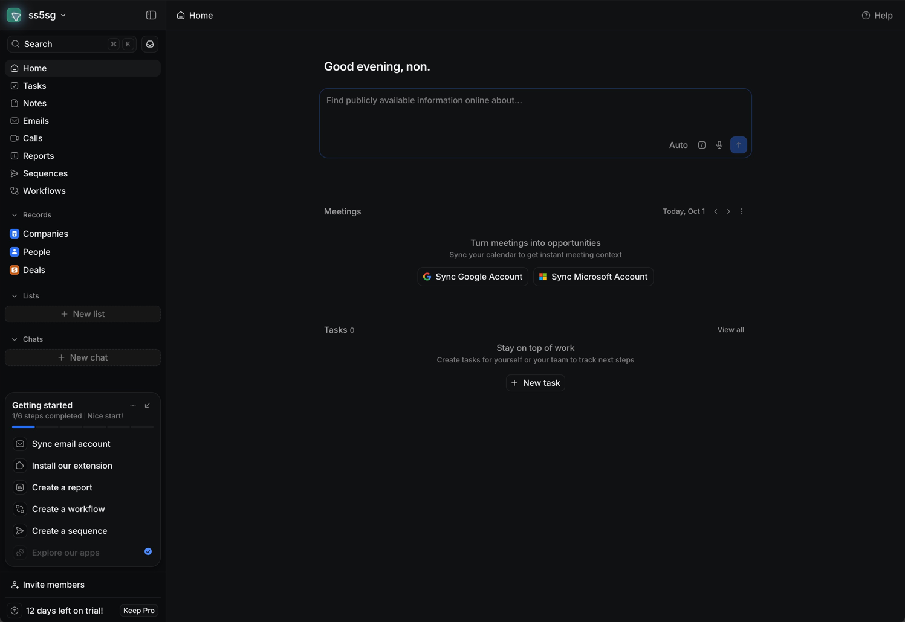
This is a sampled desktop audit, not a complete Attio component inventory or accessibility certification. Mobile, all accent themes in use, error states, loading transitions, detailed timing and every keyboard interaction remain outside the verified sample. Screenshot colors and dimensions are explicitly approximate. The Figma values cited as verified were read directly during this audit.